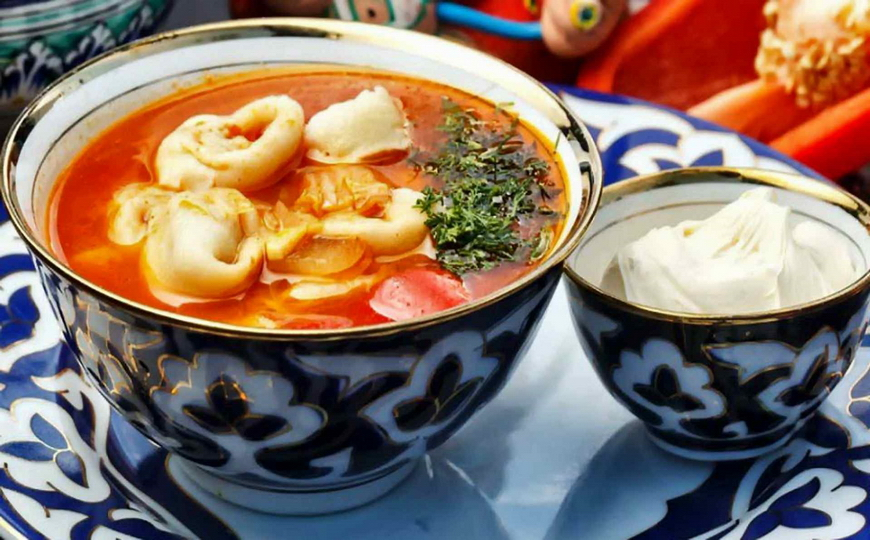
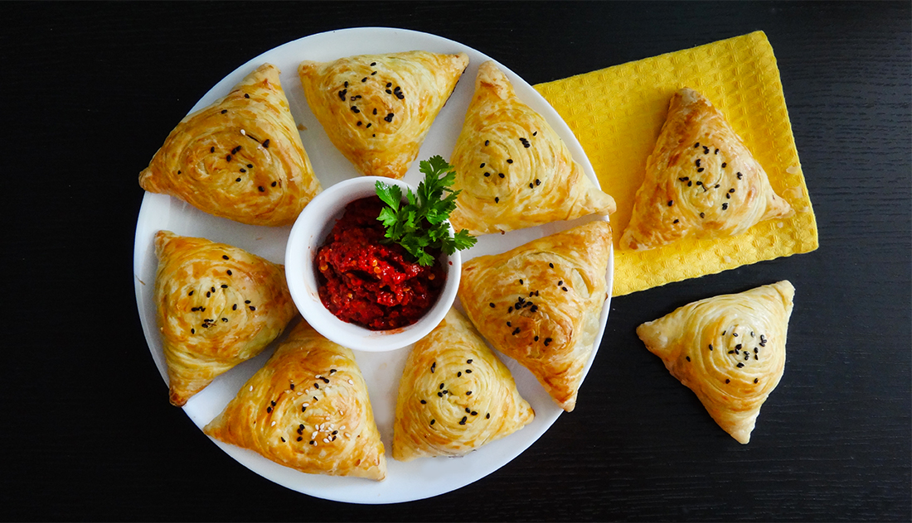

Kiyevcha kotletlar va kartoshka fri

Domashniy chuchvara |
|
|  | Чучвара́ (узб. chuchvara, уйг. چۆچۈرە, чөчүрә, кирг. чүчпара, каз. тұшпара, азерб. düşbərə) — блюдо среднеазиатской и кавказской кухонь в виде супа с отварными изделиями из пресного теста с начинкой из мяса. Аналог блюда в русской кухне — пельмени. Videosini ko'ring |
Kiyevcha kotletlar va kartoshka fri |
|
|
Kotletlar deyarli har qanday garnirlar bilan mos keladi. Ularni tez va oson tayyorlash mumkin — jarayonga to'g'ri yondoshsangiz, siz ajoyib ko'rinishga ega, ishtaha ochadigan mazali taom pishiraolasiz. Kotletlar – bu «kechki ovqatni nima pishiramiz?», degan savolning eng maqbul javobidir. Siz kotlet o'ramini muzdan tushirib, pishirishning usulini aniq qilib olsangiz va ta'bingizga qarab garnir tanlasangiz bo'ldi. "Kulinar" savdo belgisining quyidagi nomdagilarini sinab ko'ring: Kurka go'shtidan parhez kotletlar, Mol go'shtli kotletlar, so'ngra pishirishni boshlab yuboring. Biz siz uchun oson bo'lgan tayyorlash usullarini to'pladik, ular 15 daqiqadan ko'p vaqt olmaydi. Osh bo'lsin! |
Somsa |
|
|  | Ozbekistonda yashaydigan yoki bu gozal mamlakatda mehmonda bolgan har bir shaxs ozbek oshxonasining ovqatlarini alohida iliqlik bilan eslab turadi. Jahonga mashhur taniqli taomlar orasida somsa (samsa) maxsus sharafga ega. Sizga asl mazali va chiroyli qavatli somsa tayyorlash retseptini taklif etamiz. SOMSA TAYYOLASH UCHUN KERAKLI MASALLIQLAR Somsa xamiri uchun: Un — 500 gramm Suv — 250 ml Tuz — 1 choy qoshiq Sariyog yoki eritilgan yog — 100 gramm Somsa nachinkasi uchun: Yogli qoy goshti (laxm) — 500 gramm Piyoz — 500 gramm Tuz — 1 choy qoshiq Murch kukuni — 1 choy qoshiq Zira (tabga kora) — 1 choy qoshiq video ko'rish |